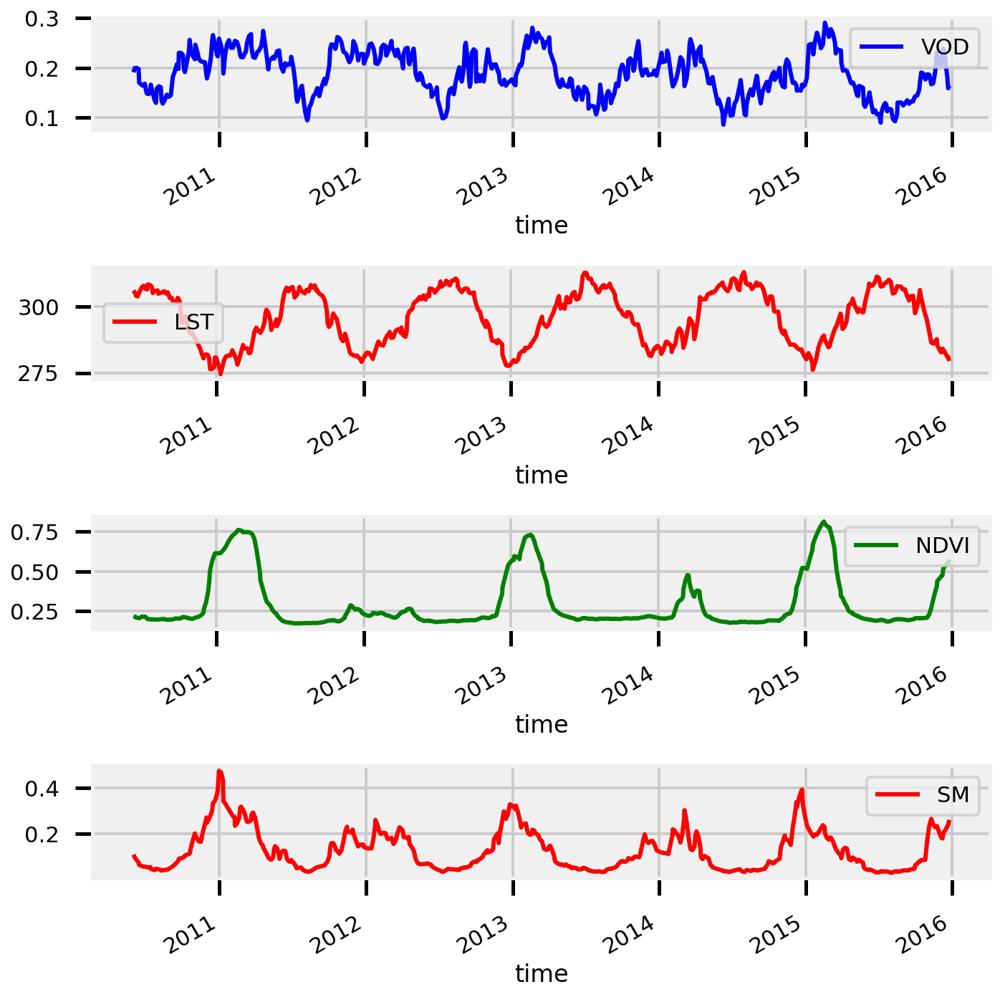
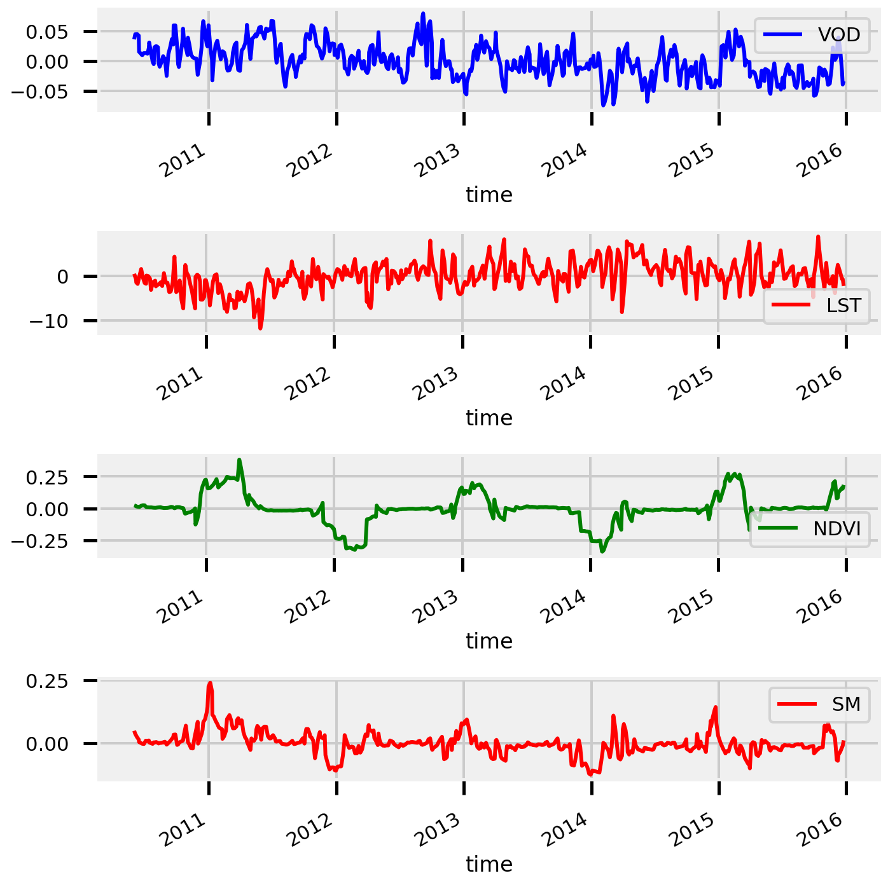
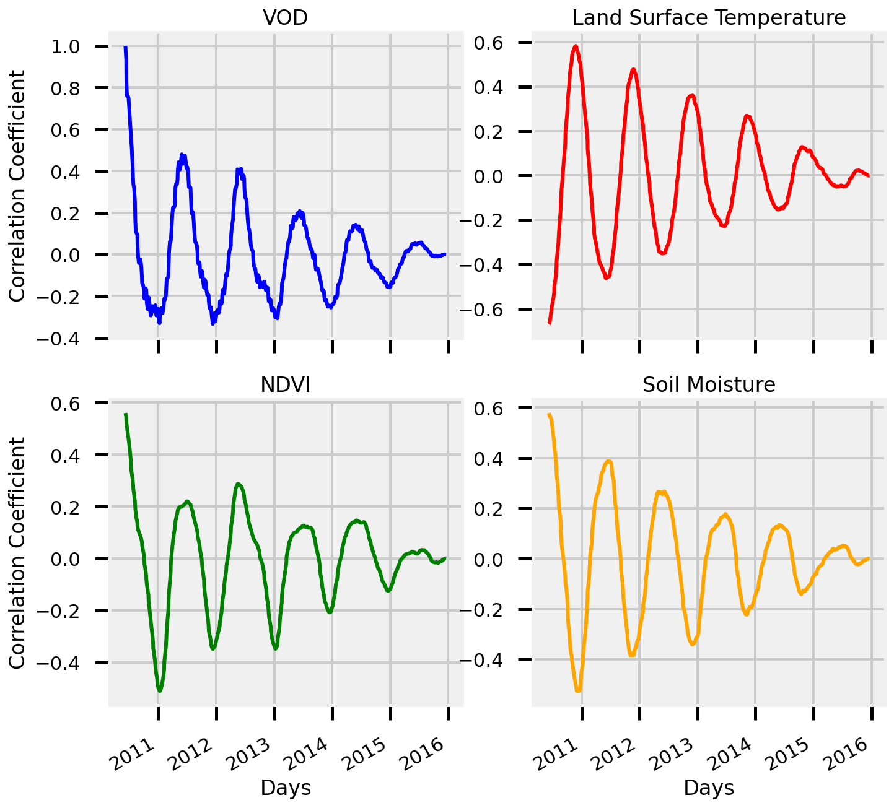
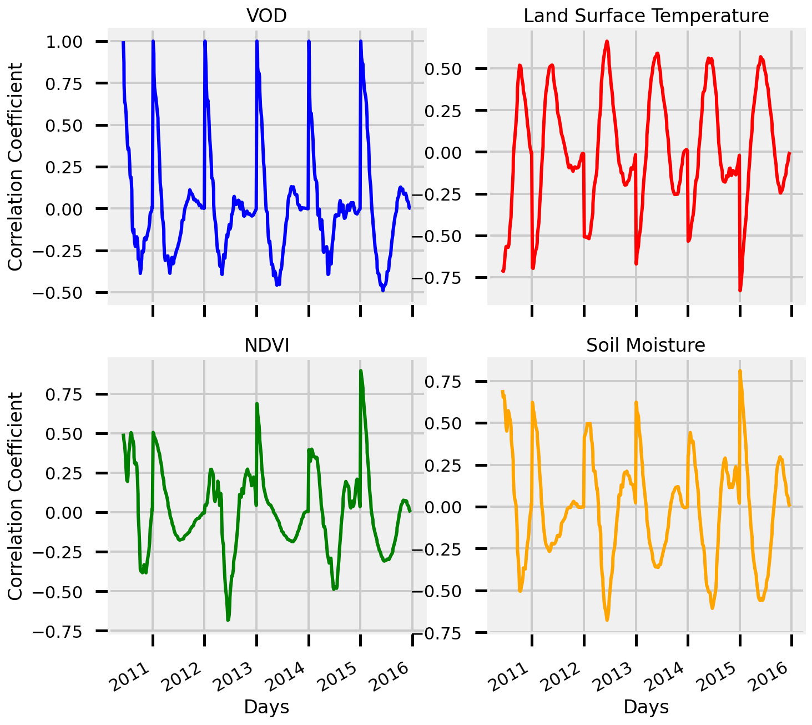
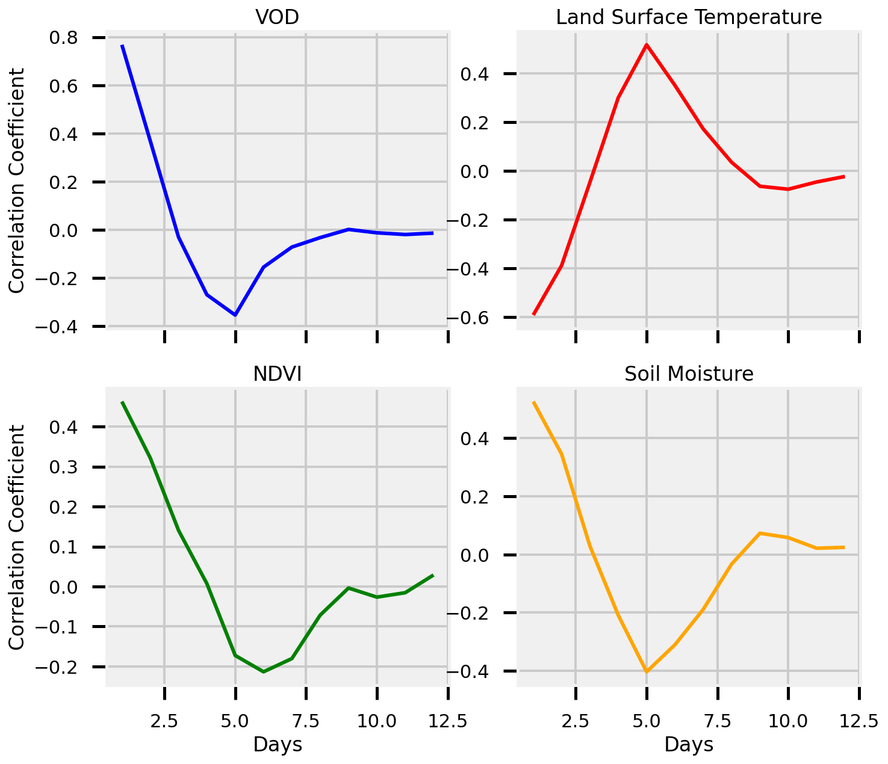
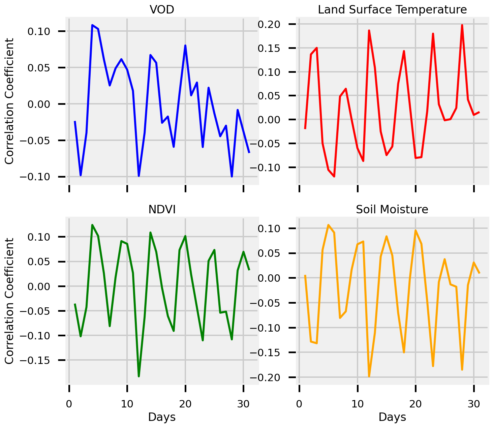
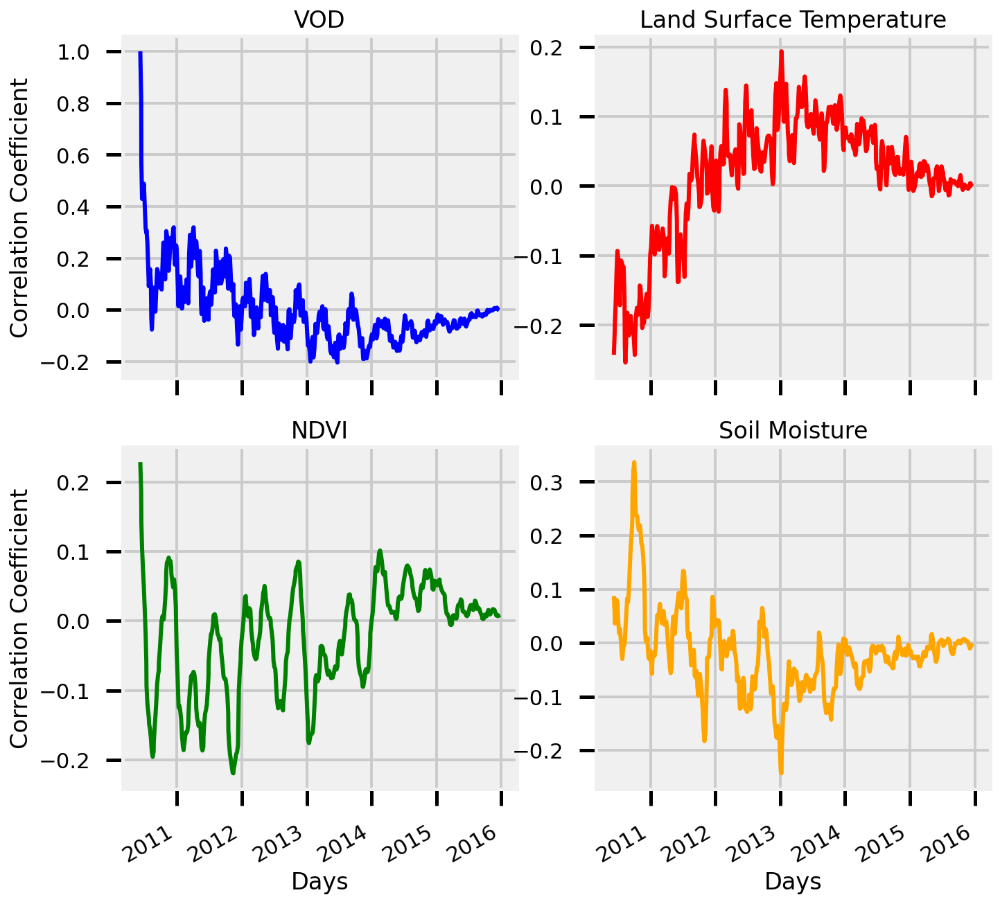
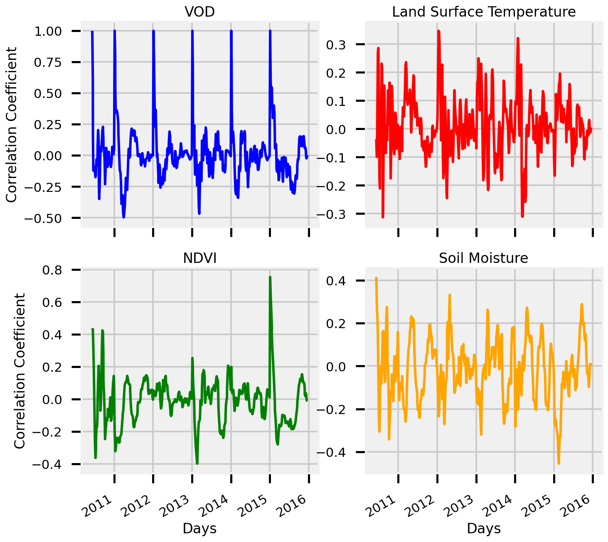
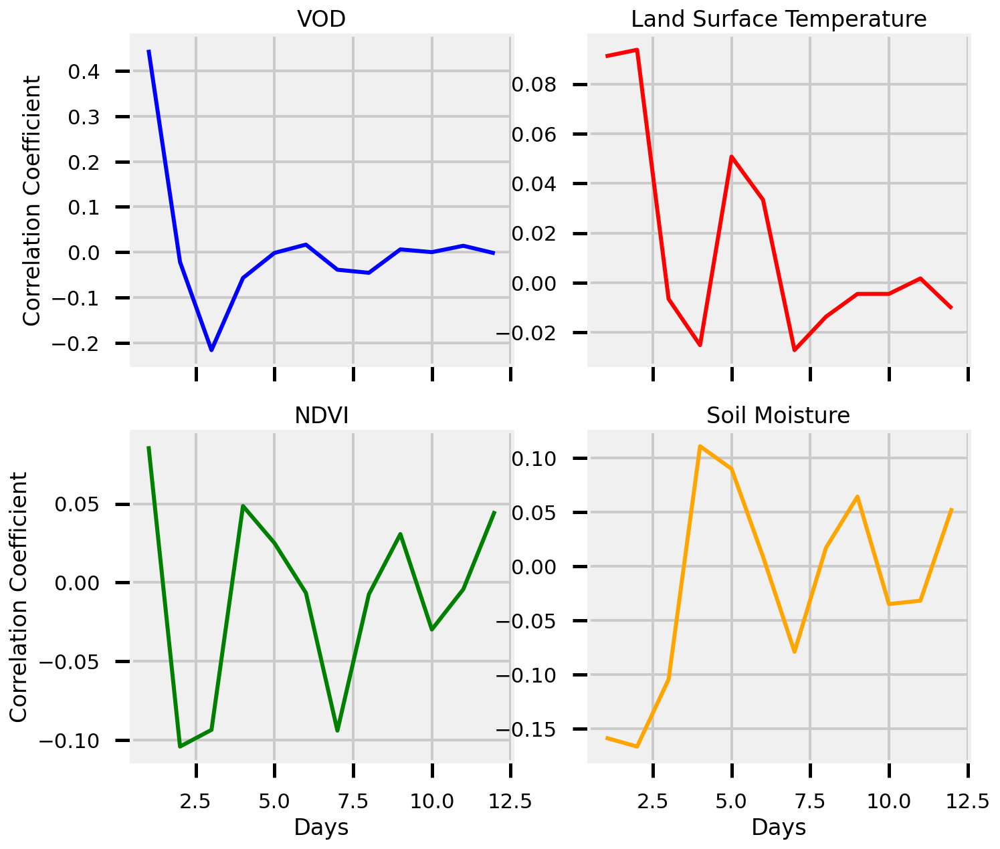
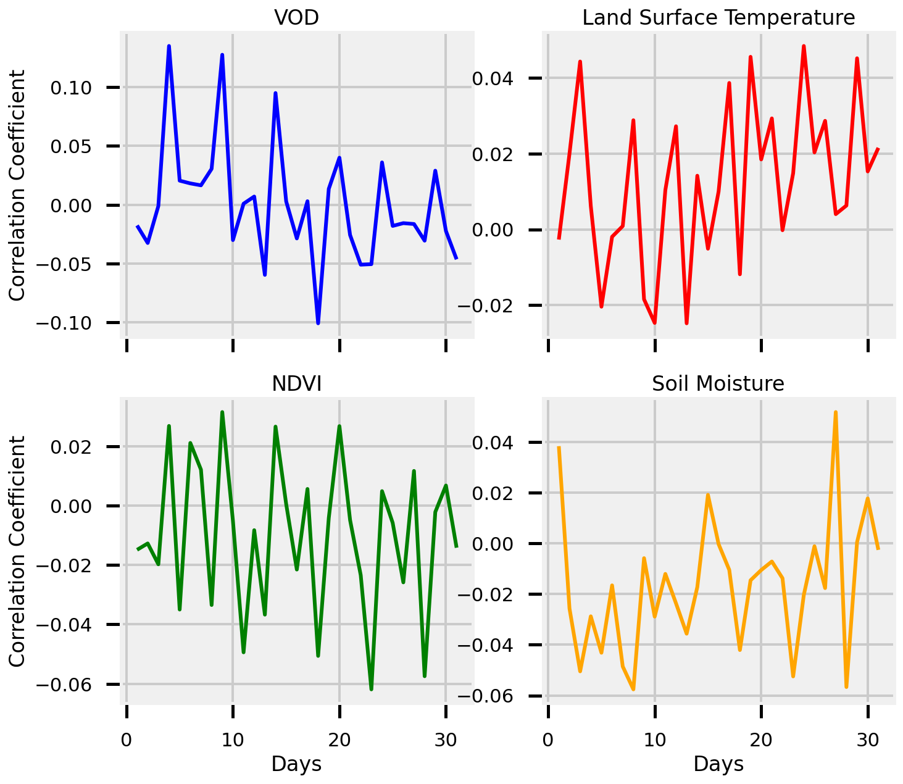

Drought Features¶
Steps:
Load CONUS dataset (5D, 14D temporal resolution)
Subset Area of Interest (AOI)
Interpolate the NANs
Smooth the Signal
Calculate the anomalies (remove the climatology)
Package Preamble¶
import sys
from pyprojroot import here
# spyder up to find the root
root = here(project_files=[".here"])
# append to path
sys.path.append(str(here()))
sys.path.append("/home/emmanuel/code/isp_data")
# standard libraries
import geopandas as gpd
import xarray as xr
import numpy as np
xr.set_options(display_style="html")
# Helper Functions
from isp_data.drought.load import DroughtData
from isp_data.polygons import get_local_polygons
from isp_data.viz import plot_mean_time
from isp_data.esdc.subset import select_pixel
from isp_data.esdc.decomposition import calculate_monthly_mean
# MATPLOTLIB Settings
import matplotlib as mpl
import matplotlib.pyplot as plt
%matplotlib inline
%config InlineBackend.figure_format = 'retina'
# SEABORN SETTINGS
import seaborn as sns
sns.set_context(context='poster',font_scale=0.7)
%load_ext autoreload
%autoreload 2
Preprocessing Steps¶
Load Drought Data
Select Area of Interest
Interpolate the NANs
Smooth the Signal
Remove Climatology
Helper Plot Functions¶
def plot_ts(ds):
fig, ax = plt.subplots(nrows=4, figsize=(10,10))
ds.to_dataframe()[["VOD"]].plot(ax=ax[0], color="Blue")
ds.to_dataframe()[["LST"]].plot(ax=ax[1], color="Red")
ds.to_dataframe()[["NDVI"]].plot(ax=ax[2], color="Green")
ds.to_dataframe()[["SM"]].plot(ax=ax[3], color="Red")
plt.tight_layout()
plt.show()
# ============================
# 1 - Load Drought Data
# ============================
region = 'conus'
sampling = '5D'
drought_data = DroughtData()
drought_cube = drought_data.load_data(region, sampling)
# ============================
# 2 - Select Area of Interest
# ============================
pixel = (-121, 37)
demo_pixel = select_pixel(drought_cube, pixel, method='nearest')
# ======================
# 3 - Interpolate NANs
# ======================
# interpolation arguments
interp_dim = 'time'
method = 'slinear'
# do interpolation
demo_pixel_interp = demo_pixel.interpolate_na(
dim=interp_dim,
method=method
)
# ======================
# 4 - Smooth Signal
# ======================
# smoothing parameters
window_length = 3
center = True
# apply savgol filter
demo_pixel_interp_rolling = demo_pixel_interp.rolling(
time=window_length,
center=center,
).mean()
# =======================
# 5 - Remove Climatology
# =======================
# calculate the climatology
demo_pixel_climatology_mean = calculate_monthly_mean(demo_pixel_interp_rolling)
# remove climatology
demo_pixel_anomalies = demo_pixel_interp_rolling.groupby('time.month') - demo_pixel_climatology_mean
Plot Signal¶
plot_ts(demo_pixel_interp_rolling)

Plot Anomalies¶
plot_ts(demo_pixel_anomalies)

AutoCorrelation (Self)¶
def autocorrelation(x: np.ndarray, symmetric: bool=True) -> np.ndarray:
"""Computes the autocorrlation of a signal
Parameters
----------
x : np.ndarray
the input array, shape=(n_samples,)
symmetric : bool, default=True
whether to return the symmetric or not
Returns
-------
auto_corr : np.ndarray
the autocorrelation, shape=(n_samples,) or
shape=(n_samples/2,) if symmetric is True
"""
# remove the sample mean
x -= np.mean(x)
# compute lags
n_samples = x.shape[0]
lags = compute_lags(x)
# compute cross correlation
auto_corr = np.correlate(x, x, mode="full")
# normalize by the zero-lag value
auto_corr /= auto_corr[n_samples - 1]
if symmetric:
return auto_corr[n_samples-1:], lags[n_samples-1:]
else:
return auto_corr, lags
def compute_lags(x):
"""compute the lags"""
return np.arange(-x.shape[0] + 1, x.shape[0])
Cross Correlation¶
def cross_correlation(x: np.ndarray, y: np.ndarray, symmetric: bool=True) -> np.ndarray:
"""Computes the Autocorrelation between two signals
Parameters
----------
x : np.ndarray
the input array
y : np.ndarray
the input array
Returns
-------
cross_corr : np.ndarray
the autocorrelation, shape=(n_samples,) or
shape=(n_samples/2,) if symmetric is True
"""
np.testing.assert_equal(x.shape, y.shape)
# remove the sample mean
x -= np.mean(x)
y -= np.mean(y)
# compute lags
n_samples = x.shape[0]
lags = compute_lags(x)
# compute cross correlation
cross_cov = np.correlate(x, y, mode="full")
cross_corr = cross_cov / (n_samples * np.std(x) * np.std(y))
if symmetric:
return cross_corr[n_samples-1:], lags[n_samples-1:]
else:
return cross_corr, lags
def plot_crosscorr(ds):
fig, ax = plt.subplots(nrows=2, ncols=2, figsize=(10,10))
ds.VOD.plot(ax=ax[0,0], color="blue")
ax[0,0].set(
ylabel="Correlation Coefficient", title="VOD",
xticklabels=[], xlabel=""
)
ds.LST.plot(ax=ax[0,1], color="red")
ax[0,1].set(
ylabel="", title="Land Surface Temperature",
xticklabels=[], xlabel=""
)
ds.NDVI.plot(ax=ax[1,0], color="green")
ax[1,0].set(
xlabel="Days", ylabel="Correlation Coefficient", title="NDVI"
)
ds.SM.plot(ax=ax[1,1], color="orange")
ax[1,1].set(
xlabel="Days", ylabel="", title="Soil Moisture",
)
plt.show()
return None
# drop nans
crosscorr_variables = demo_pixel_interp_rolling.dropna(dim="time")
# small hack to make it a single output function
def body(x):
ac, _ = cross_correlation(x.values, crosscorr_variables.VOD.values, True)
return ac
# compute autocorr for each of the variables
ds = crosscorr_variables.map(body)
# combine the years
plot_crosscorr(ds)

Groupby Years¶
# drop nans
crosscorr_variables = demo_pixel_interp_rolling.dropna(dim="time")
# copy the data array
crosscorr_variables = crosscorr_variables.copy()
# groupby year
crosscorr_variables = crosscorr_variables.groupby("time.year")
datasets = []
# loop through different years
for iyear, i_dataset in crosscorr_variables:
# small hack to make it a single output function
def body(x):
ac, _ = cross_correlation(x.values, i_dataset.VOD.values, True)
return ac
# map each of the autocorrelations over each of the variables
i_dataset = i_dataset.map(body)
# append the dataset to the list
datasets.append(i_dataset)
# merge the datasets
ds = xr.merge(datasets)
# combine the years
plot_crosscorr(ds)

View Monthly¶
# combine the years
plot_crosscorr(ds.groupby("time.month").mean())

View Daily (per month)¶
# combine the years
plot_crosscorr(ds.groupby("time.day").mean())

Cross Correlation - Anomalies¶
# drop nans
crosscorr_variables = demo_pixel_anomalies.dropna(dim="time")
# small hack to make it a single output function
def body(x):
ac, _ = cross_correlation(x.values, crosscorr_variables.VOD.values, True)
return ac
# compute autocorr for each of the variables
ds = crosscorr_variables.map(body)
# combine the years
plot_crosscorr(ds)

Groupby Years¶
# drop nans
crosscorr_variables = demo_pixel_anomalies.dropna(dim="time")
# copy the data array
crosscorr_variables = crosscorr_variables.copy()
# groupby year
crosscorr_variables = crosscorr_variables.groupby("time.year")
datasets = []
# loop through different years
for iyear, i_dataset in crosscorr_variables:
# small hack to make it a single output function
def body(x):
ac, _ = cross_correlation(x.values, i_dataset.VOD.values, True)
return ac
# map each of the autocorrelations over each of the variables
i_dataset = i_dataset.map(body)
# append the dataset to the list
datasets.append(i_dataset)
# merge the datasets
ds = xr.merge(datasets)
# combine the years
plot_crosscorr(ds)

Average Per Year - By Month¶
# combine the years
plot_crosscorr(ds.groupby("time.month").mean())

Average Per Year - By Day¶
# combine the years
plot_crosscorr(ds.groupby("time.day").mean())
